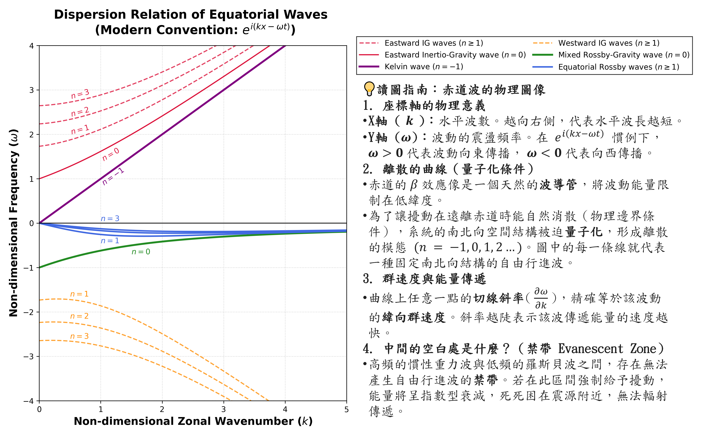
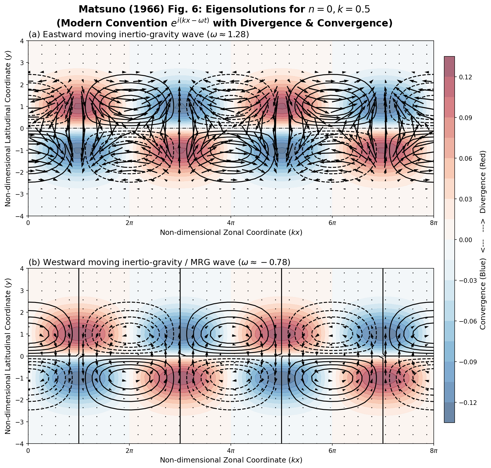

Eigenvectors and Eigenfunctions of the Linearized Shallow Water Equations#
證明目標：#
如果使用 \(i(kx+\omega t)\) 應該會推導出這種形式#
假設與已知 (Assumptions & Preliminaries)#
【已知 1】赤道 \(\beta\) 平面無因次化線性淺水方程式 (Non-dimensionalized linearized shallow water equations on equatorial beta-plane)：
(a) \(x\) 方向動量方程式：
\[\frac{\partial u}{\partial t} - yv + \frac{\partial \phi}{\partial x} = 0\](b) \(y\) 方向動量方程式：
\[\frac{\partial v}{\partial t} + yu + \frac{\partial \phi}{\partial y} = 0\](c) 質量守恆連續方程式：
\[\frac{\partial \phi}{\partial t} + \frac{\partial u}{\partial x} + \frac{\partial v}{\partial y} = 0\]\(u\) : 經無因次化之緯向速度微擾場 (Non-dimensionalized zonal velocity perturbation field) [無單位]
\(v\) : 經無因次化之經向速度微擾場 (Non-dimensionalized meridional velocity perturbation field) [無單位]
\(\phi\) : 經無因次化之重力位高度微擾場 (Non-dimensionalized geopotential height perturbation field) [無單位]
\(x\) : 無因次化之緯向空間座標 (Non-dimensionalized zonal spatial coordinate) [無單位]
\(y\) : 無因次化之經向空間座標 (Non-dimensionalized meridional spatial coordinate) [無單位]
\(t\) : 無因次化之時間座標 (Non-dimensionalized temporal coordinate) [無單位]
【假設 1】波譜空間轉換形式 (Spectral space transformation form)： 因為在 \(y\) 方向無週期性，所以無法做轉換，因此以 \(x\) 方向的轉換為主。 注意：前人常用 \(i(kx+\omega t)\) 來推導但是現在我這邊用的是 \(i(kx-\omega t)\) 更符合現代波動向右傳定義為正號
(a) 東西向速度場的平面波譜展開：
\[u(x,y,t) = \sum_{k=-\infty}^{\infty} \sum_{\omega=-\infty}^{\infty} \hat{u}_{k,\omega}(y)e^{i(kx-\omega t)}\](b) 南北向速度場的平面波譜展開：
\[v(x,y,t) = \sum_{k=-\infty}^{\infty} \sum_{\omega=-\infty}^{\infty} \hat{v}_{k,\omega}(y)e^{i(kx-\omega t)}\](c) 位勢高度微擾場的平面波譜展開：
\[\phi(x,y,t) = \sum_{k=-\infty}^{\infty} \sum_{\omega=-\infty}^{\infty} \hat{\phi}_{k,\omega}(y)e^{i(kx-\omega t)}\]\(u(x,y,t)\) : 物理空間中經無因次化之緯向（東西向）速度微擾場 (Non-dimensionalized zonal velocity perturbation field) [無單位]
\(v(x,y,t)\) : 物理空間中經無因次化之經向（南北向）速度微擾場 (Non-dimensionalized meridional velocity perturbation field) [無單位]
\(\phi(x,y,t)\) : 物理空間中經無因次化之重力位高度微擾場 (Non-dimensionalized geopotential height perturbation field) [無單位]
\(k\) : 經無因次化之緯向水平波數 (Non-dimensionalized zonal wavenumber) [無單位]
\(\omega \) : 經無因次化之波動特徵角頻率 (Non-dimensionalized angular frequency) [無單位]
\(i\) : 虛數單位 (Imaginary unit, \(i = \sqrt{-1}\)) [無單位]
\(e^{i(kx-\omega t)}\) : 現代標準之向右傳播平面波結構無因次基底函數 (Non-dimensionalized harmonic wave basis function) [無單位]
\(\hat{u}_{k,\omega}(y)\) : 頻譜波數空間中，與波數 \(k\) 及頻率 \(\omega \) 對應的緯向速度傅立葉振幅結構函數，僅為 \(y\) 的函數 (Non-dimensionalized Fourier wave amplitude coefficient of zonal velocity) [無單位]
\(\hat{v}_{k,\omega}(y)\) : 頻譜波數空間中，與波數 \(k\) 及頻率 \(\omega \) 對應的經向速度傅立葉振幅結構函數，僅為 \(y\) 的函數 (Non-dimensionalized Fourier wave amplitude coefficient of meridional velocity) [無單位]
\(\hat{\phi}_{k,\omega}(y)\) : 頻譜波數空間中，與波數 \(k\) 及頻率 \(\omega \) 對應的重力位高度微擾傅立葉振幅結構函數，僅為 \(y\) 的函數 (Non-dimensionalized Fourier wave amplitude coefficient of geopotential) [無單位]
【已知 2】正交性 (Orthogonality)： 複數指數基底函數在週期域上具有完美的正交性質。對任意整數波數 \(k, k'\) 與角頻率 \(\omega, \omega'\)，其在空間域與時間域的歸一化積分滿足克羅內克函數（Kronecker delta）關係，這是將物理方程投影至頻譜空間的數理基礎。
(a) 空間基底函數的正交積分：
\[\frac{1}{L}\int _{0}^{L}e^{i(k'-k)x}\,dx=\delta_{k'k}\](b) 時間基底函數的正交積分：
\[\frac{1}{T}\int _{0}^{T}e^{-i(\omega'-\omega )t}\,dt=\delta_{\omega'\omega }\]\(L\) : 系統在東西向（\(x\) 軸方向）經無因次化之空間特徵週期長度 (Non-dimensionalized spatial domain period) [無單位]
\(\frac{1}{L}\) : 經無因次化之空間域歸一化因子 (Non-dimensionalized spatial normalization factor) [無單位]
\(k\) : 展開式中基底函數經無因次化之緯向水平波數 (Non-dimensionalized zonal wavenumber index) [無單位]
\(k'\) : 投影測試項中經無因次化之緯向水平波數 (Non-dimensionalized test zonal wavenumber index) [無單位]
\(e^{i(k'-k)x}\) : 兩無因次空間基底相乘後的淨空間諧振位相函數 (Non-dimensionalized net spatial harmonic phase function) [無單位]
\(\delta_{k'k}\) : 空間克羅內克函數 (Spatial Kronecker delta)，當 \(k'=k\) 時其值為 1，當 \(k' \neq k\) 時其值為 0 [無單位]
\(T\) : 系統在時間軸上經無因次化之特徵觀測週期長度 (Non-dimensionalized temporal domain period) [無單位]
\(\frac{1}{T}\) : 經無因次化之時間域歸一化因子 (Non-dimensionalized temporal normalization factor) [無單位]
\(\omega \) : 展開式中基底函數經無因次化之波動特徵角頻率 (Non-dimensionalized angular frequency index) [無單位]
\(\omega'\) : 投影測試項中經無因次化之波動特徵角頻率 (Non-dimensionalized test angular frequency index) [無單位]
\(e^{-i(\omega'-\omega )t}\) : 兩無因次時間基底相乘後的淨時間諧振位相函數 (Non-dimensionalized net temporal harmonic phase function) [無單位]
\(\delta_{\omega'\omega }\) : 時間克羅內克函數 (Temporal Kronecker delta)，當 \(\omega'=\omega\) 時其值為 1，當 \(\omega' \neq \omega\) 時其值為 0 [無單位]
【推導 1】時空偏微分算符之譜空間映射：
(a) 空間偏微時代換：
\[\begin{split}\begin{gather*} \frac{\partial}{\partial x}\left[ \Psi(x,y,t) \right] &\overset{\text{假設 1}}{=}& \frac{\partial}{\partial x}\left[ \sum_{k=-\infty}^{\infty} \sum_{\omega=-\infty}^{\infty} \hat{\Psi}_{k,\omega}(y)e^{i(kx-\omega t)} \right] \\ \frac{\partial}{\partial x}\left[ \Psi(x,y,t) \right] &=& \sum_{k=-\infty}^{\infty} \sum_{\omega=-\infty}^{\infty} \hat{\Psi}_{k,\omega}(y) \frac{\partial}{\partial x} \left[ e^{i(kx-\omega t)} \right] \\ \frac{\partial}{\partial x}\left[ \Psi(x,y,t) \right] &=& \sum_{k=-\infty}^{\infty} \sum_{\omega=-\infty}^{\infty} \hat{\Psi}_{k,\omega}(y) \left( ik \cdot e^{i(kx-\omega t)} \right) \\ \frac{\partial}{\partial x}\left[ \Psi(x,y,t) \right] &=& ik \cdot \sum_{k=-\infty}^{\infty} \sum_{\omega=-\infty}^{\infty} \hat{\Psi}_{k,\omega}(y) e^{i(kx-\omega t)} \\ \frac{\partial}{\partial x}\left[ \Psi(x,y,t) \right] &\overset{\text{假設 1}}{=}& ik \cdot \Psi(x,y,t) \\ \frac{\partial}{\partial x} &\Leftrightarrow& ik \\ \end{gather*}\end{split}\](b) 時間偏微時代換：
\[\begin{split}\begin{gather*} \frac{\partial}{\partial t}\left[ \Psi(x,y,t) \right] &\overset{\text{假設 1}}{=}& \frac{\partial}{\partial t}\left[ \sum_{k=-\infty}^{\infty} \sum_{\omega=-\infty}^{\infty} \hat{\Psi}_{k,\omega}(y)e^{i(kx-\omega t)} \right] \\ \frac{\partial}{\partial t}\left[ \Psi(x,y,t) \right] &=& \sum_{k=-\infty}^{\infty} \sum_{\omega=-\infty}^{\infty} \hat{\Psi}_{k,\omega}(y) \frac{\partial}{\partial t} \left[ e^{i(kx-\omega t)} \right] \\ \frac{\partial}{\partial t}\left[ \Psi(x,y,t) \right] &=& \sum_{k=-\infty}^{\infty} \sum_{\omega=-\infty}^{\infty} \hat{\Psi}_{k,\omega}(y) \left( -i\omega \cdot e^{i(kx-\omega t)} \right) \\ \frac{\partial}{\partial t}\left[ \Psi(x,y,t) \right] &=& -i\omega \cdot \sum_{k=-\infty}^{\infty} \sum_{\omega=-\infty}^{\infty} \hat{\Psi}_{k,\omega}(y) e^{i(kx-\omega t)} \\ \frac{\partial}{\partial t}\left[ \Psi(x,y,t) \right] &\overset{\text{假設 1}}{=}& -i\omega \cdot \Psi(x,y,t) \\ \frac{\partial}{\partial t} &\Leftrightarrow& -i\omega \\ \end{gather*}\end{split}\]\(\Psi(x,y,t)\) : 物理空間中經無因次化之大氣任意連續微擾場函數 (Non-dimensionalized arbitrary continuous perturbation field) [無單位]
\(\hat{\Psi}_{k,\omega}(y)\) : 譜空間中經無因次化且與波數 \(k\) 及頻率 \(\omega \) 對應的傅立葉特徵結構振幅函數，僅為 \(y\) 的函數 (Non-dimensionalized Fourier wave amplitude function) [無單位]
\(k\) : 經無因次化之緯向水平波數 (Non-dimensionalized zonal wavenumber) [無單位]
\(\omega \) : 經無因次化之波動特徵角頻率 (Non-dimensionalized angular frequency) [無單位]
\(e^{i(kx-\omega t)}\) : 現代向右傳播平面波結構之無因次基底函數 (Non-dimensionalized harmonic wave basis function) [無單位]
【已知 3】埃爾米特微分方程式與遞迴關係 (Hermite differential equation and recurrence relations)：
(a) 標準常微分方程式：
\[\frac{d^2 H_n(y)}{dy^2} - 2y \frac{d H_n(y)}{dy} + 2n H_n(y) = 0\](b) 一階微分遞迴關係：
\[\frac{d H_n(y)}{dy} = 2n H_{n-1}(y)\](c) 空間變數遞迴關係：
\[2y H_n(y) = H_{n+1}(y) + 2n H_{n-1}(y)\](d) 參考表：
階數 (\(n\))
埃爾米特多項式 \(H_n(y)\)
奇偶性
0
\(1\)
偶函數
1
\(2y\)
奇函數
2
\(4y^2 - 2\)
偶函數
3
\(8y^3 - 12y\)
奇函數
4
\(16y^4 - 48y^2 + 12\)
偶函數
5
\(32y^5 - 160y^3 + 120y\)
奇函數
6
\(64y^6 - 480y^4 + 720y^2 - 120\)
偶函數
7
\(128y^7 - 1344y^5 + 3360y^3 - 1680y\)
奇函數
8
\(256y^8 - 3584y^6 + 13440y^4 - 13440y^2 + 1680\)
偶函數
9
\(512y^9 - 9216y^7 + 48384y^5 - 80640y^3 + 30240y\)
奇函數
10
\(1024y^{10} - 23040y^8 + 161280y^6 - 403200y^4 + 302400y^2 - 30240\)
偶函數
\(H_n(y)\) : 關於無因次座標 \(y\) 的第 \(n\) 階埃爾米特多項式 (Hermite polynomial of order n) [無單位]
\(n\) : 南北向特徵模態之非負整數指數 (Meridional mode non-negative integer index) [無單位]
\(y\) : 無因次化之經向空間座標 (Non-dimensionalized meridional spatial coordinate) [無單位]
【定義 1】經向速度特徵解高斯包絡代換 (Gaussian envelope substitution for meridional velocity eigenfunction)： 為了滿足南北兩極遠離赤道時，微擾振幅必須趨近於零的無窮遠物理邊界條件（即當 \(y \to \pm\infty\) 時，波動能量不可發散），推導時會引入一個高斯衰減包絡函數
\[\hat{v}_{k,\omega}(y) \overset{\text{def}}{=} e^{-\frac{y^2}{2}} V(y)\]\(\hat{v}_{k,\omega}(y)\) : 經向速度波譜振幅函數 [無單位]
\(k\) : 經無因次化之緯向水平波數 (Non-dimensionalized zonal wavenumber index) [無單位]
\(\omega \) : 經無因次化之波動特徵角頻率 (Non-dimensionalized angular frequency index) [無單位]
\(e^{-\frac{y^2}{2}}\) : 高斯衰減包絡函數 [無單位]
\(V(y)\) : 剝離高斯衰減項後，代表特定赤道波動特徵解的無因次經向結構變數函數 (Dimensionless meridional structure variable function) [無單位]，後續推導將證明其正比於埃爾米特多項式 \(H_n(y)\)
【定義 2】結構變數特徵解常數設定 (Constant setup for structure variable eigenfunction)： 對於任何 \(\frac{d^2V}{dy^2} - 2y \frac{dV}{dy} + \lambda V \overset{\text{已知 3(a)}}{=} 0\) 為滿足 \(V(y)\) 必須收斂為多項式 (擾動在遠離赤道處消散的物理邊界條件，當 \(y \to \pm\infty\) 時 \(\hat{v} \to 0\) )
\[V(y) \overset{\text{def}}{=} i(\omega^2 - k^2) A H_n(y) \quad , \lambda \overset{\text{已知 3(a)}}{=} 2n \quad (n=0,1,2,\dots) \]\(V(y)\) : 剝離高斯衰減項後，代表特定赤道波動特徵解的無因次經向結構變數函數 (Dimensionless meridional structure variable function) [無單位]
\(k\) : 經無因次化之緯向水平波數 (Non-dimensionalized zonal wavenumber index) [無單位]
\(\omega \) : 經無因次化之波動特徵角頻率 (Non-dimensionalized angular frequency index) [無單位]
\(A\) : 經無因次化之赤道波動任意實數常數振幅 (Arbitrary dimensionless real constant amplitude) [無單位]
\(H_n(y)\) : 關於無因次座標 \(y\) 的第 \(n\) 階埃爾米特多項式 (Hermite polynomial of order n) [無單位]
\(\lambda \) : 埃爾米特微分方程式中的固有特徵根常數參數 (Eigenvalue parameter of Hermite equation) [無單位]
\(n\) : 埃爾米特多項式的非負整數階數／模態數 (Non-negative integer order / mode number) [無單位]，範圍為 \(0, 1, 2, \dots\)，決定赤道波在南北方向的波腹與節點數
【推導 2】波譜空間常微分方程組 (ODEs in spectral space)：
(a) \(x\) 方向：
\[\begin{split}\begin{gather*} \frac{\partial u}{\partial t} - yv + \frac{\partial \phi}{\partial x} &\overset{\text{已知 1(a)}}{=}& 0 \\ \frac{\partial }{\partial t}\left[ \sum_{k'=-\infty}^{\infty} \sum_{\omega'=-\infty}^{\infty} \hat{u}_{k',\omega'}(y)e^{i(k'x-\omega' t)} \right] - y\left( \sum_{k'=-\infty}^{\infty} \sum_{\omega'=-\infty}^{\infty} \hat{v}_{k',\omega'}(y)e^{i(k'x-\omega' t)} \right) + \frac{\partial }{\partial x}\left[ \sum_{k'=-\infty}^{\infty} \sum_{\omega'=-\infty}^{\infty} \hat{\phi}_{k',\omega'}(y)e^{i(k'x-\omega' t)} \right] &\overset{\text{假設 1(a)(b)(c)}}{=}& 0 \\ \left( \sum_{k'=-\infty}^{\infty} \sum_{\omega'=-\infty}^{\infty} -i\omega' \hat{u}_{k',\omega'}(y)e^{i(k'x-\omega' t)} \right) - y\left( \sum_{k'=-\infty}^{\infty} \sum_{\omega'=-\infty}^{\infty} \hat{v}_{k',\omega'}(y)e^{i(k'x-\omega' t)} \right) + \left( \sum_{k'=-\infty}^{\infty} \sum_{\omega'=-\infty}^{\infty} ik' \hat{\phi}_{k',\omega'}(y)e^{i(k'x-\omega' t)} \right) &\overset{\text{推導 1(a)(b)}}{=}& 0 \\ \sum_{k'=-\infty}^{\infty} \sum_{\omega'=-\infty}^{\infty} \left( \left[ -i\omega'\hat{u}_{k',\omega'}(y) - y\hat{v}_{k',\omega'}(y) + ik'\hat{\phi}_{k',\omega'}(y) \right] e^{i(k'x-\omega't)} \right)&=& 0 \\ \frac{1}{LT}\int_0^T \int_0^L \sum_{k'=-\infty}^{\infty} \sum_{\omega'=-\infty}^{\infty} \left(\left[ -i\omega'\hat{u}_{k',\omega'}(y) - y\hat{v}_{k',\omega'}(y) + ik'\hat{\phi}_{k',\omega'}(y) \right] e^{i(k'x-\omega't)} \right) e^{-i(kx-\omega t)} \, dx dt &=& 0 \\ \sum_{k'=-\infty}^{\infty} \sum_{\omega'=-\infty}^{\infty} \left(\left[ -i\omega'\hat{u}_{k',\omega'}(y) - y\hat{v}_{k',\omega'}(y) + ik'\hat{\phi}_{k',\omega'}(y) \right] \frac{1}{LT}\int_0^T \int_0^L e^{i(k'-k)x} e^{-i(\omega'-\omega)t} \, dx dt \right)&=& 0 \\ \sum_{k'=-\infty}^{\infty} \sum_{\omega'=-\infty}^{\infty} \left(\left[ -i\omega'\hat{u}_{k',\omega'}(y) - y\hat{v}_{k',\omega'}(y) + ik'\hat{\phi}_{k',\omega'}(y) \right] \cdot \delta_{k'k} \cdot \delta_{\omega'\omega} \right) &\overset{\text{已知 2(a)(b)}}{=}& 0 \\ -i\omega\hat{u}_{k,\omega}(y) - y\hat{v}_{k,\omega}(y) + ik\hat{\phi}_{k,\omega}(y) = 0 \\ -i\omega\hat{u} - y\hat{v} + ik\hat{\phi} &=& 0 \\ \end{gather*}\end{split}\](b) \(y\) 方向：
\[\begin{split}\begin{gather*} \frac{\partial v}{\partial t} + yu + \frac{\partial \phi}{\partial y} &\overset{\text{已知 1(b)}}{=}& 0 \\ \frac{\partial }{\partial t}\left[ \sum_{k'=-\infty}^{\infty} \sum_{\omega'=-\infty}^{\infty} \hat{v}_{k',\omega'}(y)e^{i(k'x-\omega' t)} \right] + y\left( \sum_{k'=-\infty}^{\infty} \sum_{\omega'=-\infty}^{\infty} \hat{u}_{k',\omega'}(y)e^{i(k'x-\omega' t)} \right) + \frac{\partial }{\partial y}\left[ \sum_{k'=-\infty}^{\infty} \sum_{\omega'=-\infty}^{\infty} \hat{\phi}_{k',\omega'}(y)e^{i(k'x-\omega' t)} \right] &\overset{\text{假設 1(a)(b)(c)}}{=}& 0 \\ \left( \sum_{k'=-\infty}^{\infty} \sum_{\omega'=-\infty}^{\infty} -i\omega' \hat{v}_{k',\omega'}(y)e^{i(k'x-\omega' t)} \right) + y\left( \sum_{k'=-\infty}^{\infty} \sum_{\omega'=-\infty}^{\infty} \hat{u}_{k',\omega'}(y)e^{i(k'x-\omega' t)} \right) + \left( \sum_{k'=-\infty}^{\infty} \sum_{\omega'=-\infty}^{\infty} \frac{d\hat{\phi}_{k',\omega'}(y)}{dy} e^{i(k'x-\omega' t)} \right) &\overset{\text{推導 1(b)}}{=}& 0 \\ \sum_{k'=-\infty}^{\infty} \sum_{\omega'=-\infty}^{\infty} \left( \left[ -i\omega'\hat{v}_{k',\omega'}(y) + y\hat{u}_{k',\omega'}(y) + \frac{d\hat{\phi}_{k',\omega'}(y)}{dy} \right] e^{i(k'x-\omega't)} \right)&=& 0 \\ \frac{1}{LT}\int_0^T \int_0^L \sum_{k'=-\infty}^{\infty} \sum_{\omega'=-\infty}^{\infty} \left(\left[ -i\omega'\hat{v}_{k',\omega'}(y) + y\hat{u}_{k',\omega'}(y) + \frac{d\hat{\phi}_{k',\omega'}(y)}{dy} \right] e^{i(k'x-\omega't)} \right) e^{-i(kx-\omega t)} \, dx dt &=& 0 \\ \sum_{k'=-\infty}^{\infty} \sum_{\omega'=-\infty}^{\infty} \left(\left[ -i\omega'\hat{v}_{k',\omega'}(y) + y\hat{u}_{k',\omega'}(y) + \frac{d\hat{\phi}_{k',\omega'}(y)}{dy} \right] \frac{1}{LT}\int_0^T \int_0^L e^{i(k'-k)x} e^{-i(\omega'-\omega)t} \, dx dt \right)&=& 0 \\ \sum_{k'=-\infty}^{\infty} \sum_{\omega'=-\infty}^{\infty} \left(\left[ -i\omega'\hat{v}_{k',\omega'}(y) + y\hat{u}_{k',\omega'}(y) + \frac{d\hat{\phi}_{k',\omega'}(y)}{dy} \right] \cdot \delta_{k'k} \cdot \delta_{\omega'\omega} \right) &\overset{\text{已知 2(a)(b)}}{=}& 0 \\ -i\omega\hat{v}_{k,\omega}(y) + y\hat{u}_{k,\omega}(y) + \frac{d\hat{\phi}_{k,\omega}(y)}{dy} &=& 0 \\ -i\omega\hat{v} + y\hat{u} + \frac{d\hat{\phi}}{dy} &=& 0 \\ \end{gather*}\end{split}\](c) 連續方程式：
\[\begin{split}\begin{gather*} \frac{\partial \phi}{\partial t} + \frac{\partial u}{\partial x} + \frac{\partial v}{\partial y} &\overset{\text{已知 1(c)}}{=}& 0 \\ \frac{\partial }{\partial t}\left[ \sum_{k'=-\infty}^{\infty} \sum_{\omega'=-\infty}^{\infty} \hat{\phi}_{k',\omega'}(y)e^{i(k'x-\omega' t)} \right] + \frac{\partial }{\partial x}\left[ \sum_{k'=-\infty}^{\infty} \sum_{\omega'=-\infty}^{\infty} \hat{u}_{k',\omega'}(y)e^{i(k'x-\omega' t)} \right] + \frac{\partial }{\partial y}\left[ \sum_{k'=-\infty}^{\infty} \sum_{\omega'=-\infty}^{\infty} \hat{v}_{k',\omega'}(y)e^{i(k'x-\omega' t)} \right] &\overset{\text{假設 1(a)(b)(c)}}{=}& 0 \\ \left( \sum_{k'=-\infty}^{\infty} \sum_{\omega'=-\infty}^{\infty} -i\omega' \hat{\phi}_{k',\omega'}(y)e^{i(k'x-\omega' t)} \right) + \left( \sum_{k'=-\infty}^{\infty} \sum_{\omega'=-\infty}^{\infty} ik' \hat{u}_{k',\omega'}(y)e^{i(k'x-\omega' t)} \right) + \left( \sum_{k'=-\infty}^{\infty} \sum_{\omega'=-\infty}^{\infty} \frac{d\hat{v}_{k',\omega'}(y)}{dy} e^{i(k'x-\omega' t)} \right) &\overset{\text{推導 1(a)(b)}}{=}& 0 \\ \sum_{k'=-\infty}^{\infty} \sum_{\omega'=-\infty}^{\infty} \left( \left[ -i\omega'\hat{\phi}_{k',\omega'}(y) + ik'\hat{u}_{k',\omega'}(y) + \frac{d\hat{v}_{k',\omega'}(y)}{dy} \right] e^{i(k'x-\omega't)} \right)&=& 0 \\ \frac{1}{LT}\int_0^T \int_0^L \sum_{k'=-\infty}^{\infty} \sum_{\omega'=-\infty}^{\infty} \left(\left[ -i\omega'\hat{\phi}_{k',\omega'}(y) + ik'\hat{u}_{k',\omega'}(y) + \frac{d\hat{v}_{k',\omega'}(y)}{dy} \right] e^{i(k'x-\omega't)} \right) e^{-i(kx-\omega t)} \, dx dt &=& 0 \\ \sum_{k'=-\infty}^{\infty} \sum_{\omega'=-\infty}^{\infty} \left(\left[ -i\omega'\hat{\phi}_{k',\omega'}(y) + ik'\hat{u}_{k',\omega'}(y) + \frac{d\hat{v}_{k',\omega'}(y)}{dy} \right] \frac{1}{LT}\int_0^T \int_0^L e^{i(k'-k)x} e^{-i(\omega'-\omega)t} \, dx dt \right)&=& 0 \\ \sum_{k'=-\infty}^{\infty} \sum_{\omega'=-\infty}^{\infty} \left(\left[ -i\omega'\hat{\phi}_{k',\omega'}(y) + ik'\hat{u}_{k',\omega'}(y) + \frac{d\hat{v}_{k',\omega'}(y)}{dy} \right] \cdot \delta_{k'k} \cdot \delta_{\omega'\omega} \right) &\overset{\text{已知 2(a)(b)}}{=}& 0 \\ -i\omega\hat{\phi}_{k,\omega}(y) + ik\hat{u}_{k,\omega}(y) + \frac{d\hat{v}_{k,\omega}(y)}{dy} &=& 0 \\ -i\omega\hat{\phi} + ik\hat{u} + \frac{d\hat{v}}{dy} &=& 0 \\ \end{gather*}\end{split}\]\(u\) : 物理空間中經無因次化之緯向（東西向）速度微擾場 [無單位]
\(v\) : 物理空間中經無因次化之經向（南北向）速度微擾場 [無單位]
\(\phi \) : 物理空間中經無因次化之重力位高度微擾場 [無單位]
\(k'\) : 頻譜展開式中緯向水平波數的求和指標變數 [無單位]
\(\omega'\) : 頻譜展開式中波動特徵角頻率的求和指標變數 [無單位]
\(k\) : 目標投影鎖定之無因次緯向水平波數 [無單位]
\(\omega \) : 目標投影鎖定之無因次波動特徵角頻率 [無單位]
\(\delta_{k'k}\) : 空間克羅內克函數，當 \(k'=k\) 時為 1，否則為 0 [無單位]
\(\delta_{\omega'\omega }\) : 時間克羅內克函數，當 \(\omega'=\omega\) 時為 1，否則為 0 [無單位]
\(L\) : 經無因次化之東西向空間特徵週期長度 [無單位]
\(T\) : 經無因次化之時間軸特徵觀測週期長度 [無單位]
\(\hat{u}_{k,\omega}(y)\) : 篩選出特定波數 \(k\) 與頻率 \(\omega \) 之無因次緯向速度傅立葉振幅結構函數 [無單位]
\(\hat{v}_{k,\omega}(y)\) : 篩選出特定波數 \(k\) 與頻率 \(\omega \) 之無因次經向速度傅立葉振幅結構函數 [無單位]
\(\hat{\phi}_{k,\omega}(y)\) : 篩選出特定波數 \(k\) 與頻率 \(\omega \) 之無因次重力位高度傅立葉振幅結構函數 [無單位]
【推導 3】重力位高度與緯向速度之分離表示 (Separation representation of geopotential height and zonal velocity)：
(a) 重力位高度：由【推導 2(a)】帶入【推導 2(c)】消去 \(\hat{u}\)。
\[\begin{split}\begin{gather*} &\left\{\begin{matrix} -i\omega\hat{u} - y\hat{v} + ik\hat{\phi} &\overset{\text{推導 2(a)}}{=}& 0\\ -i\omega\hat{\phi} + ik\hat{u} + \frac{d\hat{v}}{dy} &\overset{\text{推導 2(c)}}{=}& 0 \end{matrix}\right. \\ \Rightarrow &\left\{\begin{matrix} k\omega \hat{u}-k^{2}\hat{\phi } &=& iky\hat{v} \\ k\omega \hat{u}-\omega^{2}\hat{\phi } &=& i\omega \frac{d\hat{v}}{dy} \end{matrix}\right. \end{gather*}\end{split}\]\[\begin{split}\begin{gather*} \left( k\omega \hat{u}-k^{2}\hat{\phi } \right) - \left( k\omega \hat{u}-\omega^{2}\hat{\phi } \right) &=& iky\hat{v}-i\omega \frac{d\hat{v}}{dy} \\ \left(-k^{2} + \omega^{2} \right) \hat{\phi }&=& iky\hat{v}-i\omega \frac{d\hat{v}}{dy} \\ \hat{\phi} &=& \frac{i}{\omega^2 - k^2}\left(ky\hat{v} - \omega\frac{d\hat{v}}{dy}\right) \\ \end{gather*}\end{split}\](b) 緯向速度：由【推導 2(a)】帶入【推導 2(c)】消去 \(\hat{\phi}\)。
\[\begin{split}\begin{gather*} &\left\{\begin{matrix} -i\omega\hat{u} - y\hat{v} + ik\hat{\phi} &\overset{\text{推導 2(a)}}{=}& 0\\ -i\omega\hat{\phi} + ik\hat{u} + \frac{d\hat{v}}{dy} &\overset{\text{推導 2(c)}}{=}& 0 \end{matrix}\right. \\ \Rightarrow &\left\{\begin{matrix} \omega^{2}\hat{u} - k\omega\hat{\phi} &=& i\omega y\hat{v} \\ k^{2}\hat{u} - k\omega\hat{\phi} &=& ik\frac{d\hat{v}}{dy} \end{matrix}\right. \end{gather*}\end{split}\]\[\begin{split}\begin{gather*} \left( \omega^{2}\hat{u} - k\omega\hat{\phi} \right) - \left( k^{2}\hat{u} - k\omega\hat{\phi} \right) &=& i\omega y\hat{v}-ik\frac{d\hat{v}}{dy} \\ \left( \omega^{2} - k^{2} \right)\hat{u} &=& i\omega y\hat{v}-ik\frac{d\hat{v}}{dy} \\ \hat{u} &=& \frac{i}{\omega^2 - k^2}\left(\omega y\hat{v} - k\frac{d\hat{v}}{dy}\right) \\ \end{gather*}\end{split}\]\(\hat{u}\) : 經無因次化與譜空間轉換後之緯向（東西向）速度傅立葉振幅結構函數 [無單位]
\(\hat{v}\) : 經無因次化與譜空間轉換後之經向（南北向）速度傅立葉振幅結構函數 [無單位]
\(\hat{\phi }\) : 經無因次化與譜空間轉換後之重力位高度傅立葉振幅結構函數 [無單位]
\(\omega \) : 經無因次化之波動特徵角頻率 [無單位]
\(k\) : 經無因次化之緯向水平波數 [無單位]
【推導 4】經向速度波譜振幅二階常微分方程式 (Second-order ODE for meridional velocity spectral amplitude)：
\[\begin{split}\begin{gather*} -i\omega\hat{v} + y\hat{u} + \frac{d\hat{\phi}}{dy} &\overset{\text{推導 2(b)}}{=}& 0 \\ -i\omega\hat{v} + y\frac{i}{\omega^2 - k^2}\left(\omega y\hat{v} - k\frac{d\hat{v}}{dy}\right) + \frac{d}{dy}\left[ \frac{i}{\omega^2 - k^2}\left(ky\hat{v} - \omega\frac{d\hat{v}}{dy}\right) \right] &\overset{\text{推導 3(a)(b)}}{=}& 0 \\ -i\omega\hat{v} + y\frac{i}{\omega^2 - k^2}\left(\omega y\hat{v} - k\frac{d\hat{v}}{dy}\right) + \frac{i}{\omega^2 - k^2} \left(k \hat{v} + ky\frac{d \hat{v} }{dy} - \omega\frac{d^2\hat{v}}{dy^2} \right) &=& 0 \\ -i\omega\hat{v} + \frac{i}{\omega^2 - k^2}\left(\omega y^2 \hat{v} + k \hat{v} - \omega\frac{d^2\hat{v}}{dy^2} \right) &=& 0 \\ \omega(\omega^2 - k^2)\hat{v} - \omega y^2 \hat{v} - k \hat{v} + \omega\frac{d^2\hat{v}}{dy^2} &=& 0 \\ (\omega^2 - k^2)\hat{v} - y^2 \hat{v} - \frac{k}{\omega} \hat{v} + \frac{d^2\hat{v}}{dy^2} &=& 0 \\ (\omega^2 - k^2 - \frac{k}{\omega} - y^2 ) \hat{v} + \frac{d^2\hat{v}}{dy^2} &=& 0 \\ \frac{d^2\hat{v}}{dy^2} + \left(\omega^2 - k^2 - \frac{k}{\omega} - y^2\right)\hat{v} &=& 0 \end{gather*}\end{split}\]\(\hat{v}\) : 經無因次化與譜空間轉換後之經向（南北向）速度傅立葉振幅結構函數 [無單位]
\(\hat{u}\) : 經無因次化與譜空間轉換後之緯向（東西向）速度傅立葉振幅結構函數 [無單位]
\(\hat{\phi }\) : 經無因次化與譜空間轉換後之重力位高度傅立葉振幅結構函數 [無單位]
\(\omega \) : 經無因次化之波動特徵角頻率 [無單位]
\(k\) : 經無因次化之緯向水平波數 [無單位]
【推導 5】經向速度高斯包絡之垂直/經向微分展開（Differential expansion of meridional velocity with Gaussian envelope）：
(a) 經向速度振幅的一階常微分展開：
\[\begin{split}\begin{gather*} \frac{d\hat{v}}{dy} &\overset{\text{定義 1}}{=}& \frac{d}{dy}\left[e^{-\frac{y^2}{2}} V\right] \\ &=& - y e^{-\frac{y^2}{2}} V + e^{-\frac{y^2}{2}} \frac{dV}{dy} \\ \end{gather*}\end{split}\](b) 經向速度振幅的二階常微分展開：
\[\begin{split}\begin{gather*} \frac{d^2\hat{v}}{dy^2} &=& \frac{d}{dy}\left[ \frac{d\hat{v}}{dy} \right] \\ &\overset{\text{推導 5(a)}}{=}& \frac{d}{dy}\left[ - y e^{-\frac{y^2}{2}} V + e^{-\frac{y^2}{2}} \frac{dV}{dy} \right] \\ &=& - \left( e^{-\frac{y^2}{2}} V + y \frac{-2y}{2} e^{-\frac{y^2}{2}} V + y e^{-\frac{y^2}{2}} \frac{dV}{dy} \right) - y e^{-\frac{y^2}{2}} \frac{dV}{dy} + e^{-\frac{y^2}{2}} \frac{d^2V}{dy^2} \\ &=& e^{-\frac{y^2}{2}} \frac{d^2V}{dy^2} - 2y e^{-\frac{y^2}{2}} \frac{dV}{dy} + (y^2 - 1) e^{-\frac{y^2}{2}} V \end{gather*}\end{split}\]\(\hat{v}\) : 經無因次化與譜空間轉換後之經向（南北向）速度傅立葉振幅結構函數 [無單位]
\(e^{-\frac{y^{2}}{2}}\) : 用於控制遠離赤道邊界波幅消散之無因次高斯包絡函數 [無單位]
\(V\) : 剝離高斯衰減項後，代表特定赤道波動特徵解的無因次經向結構變數函數 [無單位]
【推導 6】埃爾米特微分方程轉化與赤道波色散關係導出（Hermite ODE transformation and derivation of equatorial wave dispersion relation）：
\[\begin{split}\begin{gather*} &\frac{d^2\hat{v}}{dy^2} + \left(\omega^2 - k^2 - \frac{k}{\omega} - y^2\right)\hat{v} &\overset{\text{推導 4}}{=}& 0 \\ &\left[ e^{-\frac{y^2}{2}} \frac{d^2V}{dy^2} - 2y e^{-\frac{y^2}{2}} \frac{dV}{dy} + (y^2 - 1) e^{-\frac{y^2}{2}} V \right] + \left(\omega^2 - k^2 - \frac{k}{\omega} - y^2\right) \left(e^{-\frac{y^2}{2}} V\right) &\overset{\text{推導 5(b), 定義 1}}{=}& 0 \\ &\frac{d^2V}{dy^2} - 2y \frac{dV}{dy} + (y^2 - 1 + \omega^2 - k^2 - \frac{k}{\omega} - y^2) V &=& 0 \\ &\frac{d^2V}{dy^2} - 2y \frac{dV}{dy} + \left(\omega^2 - k^2 - \frac{k}{\omega} - 1\right) V &=& 0 \\ \overset{\text{定義 2}}{\Rightarrow}& V &=& i(\omega^2 - k^2) A H_n(y) \\ &&& \omega^2 - k^2 - \frac{k}{\omega} - 1 &\overset{\text{已知 3(a)}}{=}& 2n \quad (n=0,1,2,\dots) \\ \end{gather*}\end{split}\]\(\hat{v}\) : 經無因次化與譜空間轉換後之經向（南北向）速度傅立葉振幅結構函數 [無單位]
\(e^{-\frac{y^{2}}{2}}\) : 用於控制遠離赤道邊界波幅消散之無因次高斯包絡函數 [無單位]
\(V\) : 剝離高斯衰減項後，代表特定赤道波動特徵解的無因次經向結構變數函數 [無單位]
\(\omega \) : 經無因次化之波動特徵角頻率 [無單位]
\(k\) : 經無因次化之緯向水平波數 [無單位]
\(H_n(y)\) : 關於無因次座標 \(y\) 的第 \(n\) 階埃爾米特多項式 [無單位]
\(n\) : 埃爾米特多項式的非負整數階數／模態數 [無單位]，範圍為 \(0, 1, 2, \dots\)，決定赤道波在南北方向的波腹與節點數
\(A\) : 經無因次化之赤道波動任意實數常數振幅 (Arbitrary dimensionless real constant amplitude) [無單位]
【推導 7】經向速度特徵解與一階微分的埃爾米特函數表示（Hermite function representation of meridional velocity and its first derivative）：
(a) 經向速度振幅的埃爾米特多項式顯式表達：
\[\begin{split}\begin{gather*} \hat{v}(y) &\overset{\text{定義 1}}{=}& e^{-\frac{y^2}{2}} V(y) \\ &\overset{\text{推導 6}}{=}& i(\omega^2 - k^2) A e^{-\frac{y^2}{2}} H_n(y) \quad &, \omega^2 - k^2 - \frac{k}{\omega} - 1 &=& 2n \quad (n=0,1,2,\dots) \\ \end{gather*}\end{split}\](b) 經向速度一階常微分的埃爾米特遞迴變形：
\[\begin{split}\begin{gather*} \frac{d\hat{v}}{dy} &\overset{\text{推導 5(a)}}{=}& - y e^{-\frac{y^2}{2}} V + e^{-\frac{y^2}{2}} \frac{dV}{dy} \\ &\overset{\text{推導 6}}{=}&- y e^{-\frac{y^2}{2}} \left[ i(\omega^2 - k^2) A H_n(y) \right] + e^{-\frac{y^2}{2}} \frac{d}{dy} \left[ i(\omega^2 - k^2) A H_n(y) \right] \quad &, \omega^2 - k^2 - \frac{k}{\omega} - 1 &=& 2n \quad (n=0,1,2,\dots) \\ &=&i(\omega^2 - k^2) A e^{-\frac{y^2}{2}} \left( -y H_n(y) + \frac{d H_n(y)}{dy} \right) \quad &, \omega^2 - k^2 - \frac{k}{\omega} - 1 &=& 2n \quad (n=0,1,2,\dots) \\ &\overset{\text{已知 3(b)}}{=}& i(\omega^2 - k^2) A e^{-\frac{y^2}{2}} \left( -y H_n(y) + 2n H_{n-1}(y) \right) \quad &, \omega^2 - k^2 - \frac{k}{\omega} - 1 &=& 2n \quad (n=0,1,2,\dots) \\ \end{gather*}\end{split}\]\(\hat{v}\) : 經無因次化與譜空間轉換後之經向（南北向）速度傅立葉振幅結構函數 [無單位]
\(e^{-\frac{y^{2}}{2}}\) : 用於控制遠離赤道邊界波幅消散之無因次高斯包絡函數 [無單位]
\(V\) : 剝離高斯衰減項後，代表特定赤道波動特徵解的無因次經向結構變數函數 [無單位]
\(\omega \) : 經無因次化之波動特徵角頻率 [無單位]
\(k\) : 經無因次化之緯向水平波數 [無單位]
\(H_n(y)\) : 關於無因次座標 \(y\) 的第 \(n\) 階埃爾米特多項式 [無單位]
\(n\) : 埃爾米特多項式的非負整數階數／模態數 [無單位]，範圍為 \(0, 1, 2, \dots\)，決定赤道波在南北方向的波腹與節點數
\(A\) : 經無因次化之赤道波動任意實數常數振幅 (Arbitrary dimensionless real constant amplitude) [無單位]
證明 (Proof)#
1. 色散方程式之證明#
2. 空間特徵解之證明#
經向速度 \(\hat{v}(y)\) ：
重力位 \(\hat{\phi}(y)\) ：
緯向速度 \(\hat{u}(y)\)：
討論#
這張 赤道波色散關係圖 (Dispersion Relation Diagram) 是大氣動力學中極度核心的圖表，它視覺化了流體力學方程式在特定邊界條件下，所允許存在的波動狀態。

1. 坐標軸的物理意義#
X 軸 (\(k\))：無因次緯向波數 (Zonal wavenumber)
代表波動在東西方向的波數。數值越小代表水平波長越長（例如跨越數千公里的大尺度天氣系統）；數值越大（越往右），代表水平波長越短（例如較小尺度的微擾動）。
Y 軸 (\(\omega\))：無因次頻率 (Frequency)
代表波動隨時間「震盪的快慢」。絕對值越大（圖形的上下兩端），波震盪越劇烈（如高頻的慣性重力波）；絕對值越小（貼近 X 軸），波的變化越緩慢（如低頻的羅斯貝波）。
2. 每一條線的意義#
這是量子化，不是特舉幾條線而已。 圖中每一條實線或虛線，代表一種具有特定「南北向空間結構」的波動，這個結構由模態數 \(n\) 決定。
在開放空間中，頻率和波數通常是連續的，但因為赤道波的能量必須被限制在赤道附近（邊界條件：遠離赤道時擾動必須收斂至 0），數學上迫使空間結構必須以離散的埃爾米特多項式 \(H_n(y)\) 存在。因此，為了不讓波發散，\(n\) 只能是整數 (\(n = -1, 0, 1, 2, 3 \dots\))，這就是「量子化」的必然結果。圖中只畫出了前幾個模態作為代表，實際上還有無數條對應更大 \(n\) 值的離散曲線向外、向高頻擴展。
同一條線上不同的點#
代表具有「南北向結構完全相同（同一個 \(n\)），但東西向尺度不斷縮放」的同族波動。
當水平波數 \(k\) 改變時，為了滿足物理定律，頻率 \(\omega\) 必須沿著這條線嚴格跟著改變。
物理關鍵： 曲線上任意一點的「切線斜率」(\(\partial \omega / \partial k\))，在物理上精確等於該波動的緯向群速度 (Zonal Group Velocity)，也就是這個波實際傳遞能量的速度與方向。
同一個 X 座標不同點#
代表我們在觀察「東西向水平寬度一模一樣」的擾動。
沿著垂直線往上下看，會發現同一個寬度的系統，能以多種不同的頻率震盪。極高頻的點對應的是重力主導的慣性重力波；低頻的點對應的是受 \(\beta\) 效應主導的赤道羅斯貝波。
同一個 Y 座標不同點#
代表我們用一個「固定頻率的節拍器」去擾動大氣。
畫一條水平線過去，它會切過許多不同 \(n\) 值的曲線。這意味著在同一個震盪頻率下，大氣會同時激發出多種水平波長與南北向寬度組合不同的波，它們會在空間中同時向外傳播並發生干涉。
3.空白的區域（禁帶）#
在圖中，高頻的慣性重力波（上下兩側）與低頻的羅斯貝波（中間貼地處）之間，有一大片沒有普通 \(n \ge 1\) 曲線經過的空白區域。這被稱為衰減區 (Evanescent Zone) 或禁帶 (Forbidden Zone)。
絕對不存在這種波嗎？ 可以這麼說，在數學與物理上，「能夠自由向遠方無損耗傳遞能量的自由行進波」在這些白色區域是絕對不存在的。
如果你強行以這塊空白區域內的頻率與波數組合去震盪空氣，擾動無法形成波動輻射出去，其振幅會隨空間距離呈指數型快速衰減 (Exponential decay)，能量會被死死困在震源附近。
(註：圖中斜穿過這片禁區的 \(n=-1\) 克耳文波與 \(n=0\) 混合羅斯貝重力波是極度特殊的特例，它們是不受此頻率極限約束的邊界導波。)
帶入 \(n=0, t=0\)#
經向速度
緯向速度
重力位
速度場視覺化 (Velocity Field Visualization)#
